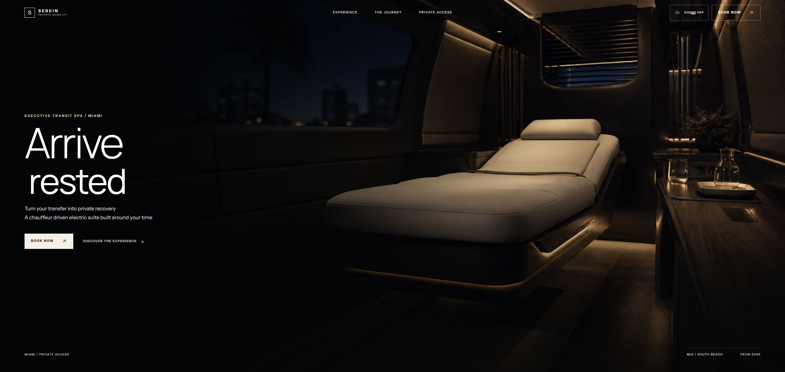

استراتيجية المنتج
تحويل الفكرة إلى نطاق قابل للبناء ومسارات واضحة تخدم هدفًا تجاريًا حقيقيًا

أربع وعشرون تجربة صنعت من الصفر وعبرت التصميم والبرمجة والتشغيل حتى أصبحت شيئًا يمكن رؤيته واستخدامه
خدمة عافية خاصة داخل مركبة بسائق في ميامي تبدأ من طلب الوصول وتمتد إلى لوحة الإدارة والتحليلات
واجهة واحدة في المقدمة وخلفها بنية كاملة من القرارات والمسارات والمكوّنات
لا توجد أسماء معلقة في جدول هنا كل منتج حاضر بواجهته الحقيقية وتقنياته وحجم بنائه
كل طبقة في المنتج لها سبب واضح من أول قرار في التجربة حتى آخر مراقبة بعد الإطلاق
تحويل الفكرة إلى نطاق قابل للبناء ومسارات واضحة تخدم هدفًا تجاريًا حقيقيًا
تخطيط رحلة الاستخدام والواجهات العربية والتجاوب الدقيق على كل شاشة
مكوّنات قابلة للتوسع وحركة محسوبة وأداء يبقى سريعًا مع نمو المنتج
صلاحيات وقواعد بيانات ولوحات تحكم وتقارير تجعل النظام قابلًا للاعتماد
تحليل وتوصيات ومساعدون أذكياء داخل مسار مفهوم بدل استعراض تقني فارغ
بعد أن شاهدت ما يمكن بناؤه